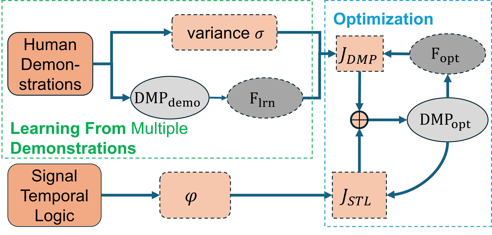

In the field of Learning from Demonstration (LfD), enabling robots to generalize learned manipulation skills to novel scenarios for long-horizon tasks remains challenging.
Specifically, it is still difficult for robots to adapt the learned skills to new environments with different task and motion requirements, especially in long-horizon, multi-stage scenarios with intricate constraints.
This paper proposes a novel hierarchical framework, called BT-TL-DMPs, that integrates Behavior Tree (BT), Temporal Logic (TL), and Dynamical Movement Primitives (DMPs) to address this problem.
Within this framework, Signal Temporal Logic (STL) is employed to formally specify complex, long-horizon task requirements and constraints.
These STL specifications are systematically transformed to generate reactive and modular BTs for high-level decision-making task structure.
An STL-constrained DMP optimization method is proposed to optimize the DMP forcing term, allowing the learned motion primitives to adapt flexibly while satisfying intricate spatiotemporal requirements and, crucially, preserving the essential dynamics learned from demonstrations.
The framework is validated through simulations demonstrating generalization capabilities under various STL constraints and real-world experiments on several long-horizon robotic manipulation tasks, where it significantly improves the success rate from 0.25 to 0.85, compared with the baseline.
The results demonstrate that the proposed framework effectively bridges the symbolic-motion gap, enabling more reliable and generalizable autonomous manipulation for complex robotic tasks.
Main Contribution
We introduce BT-TL-DMPs, a novel hierarchical robot planning framework that integrates task-level (BTs) and motion-level (DMPs) planning to reuse and generalize learned skills.
The main contributions of our work are summarized as follows:
A task-level planning method (from STL to BTs) is designed, enabling the soundness of high-level decisions across diverse scenarios effectively.
An STL-constrained DMP optimization method is developed to preserve demonstrated dynamics and enforce task-specific spatiotemporal constraints for efficient skill adaptation and generalization.
The efficacy of the proposed framework is evaluated through both simulations and experiments, which validate the framework's efficacy in making task-level decisions and generalizing learned behaviors to tackle a wide range of complex tasks in real-world settings.
Here we show a brief overview of the proposed robot TAMP framework, combining with BT, TL, and DMPs.
Key Methodology
A hierarchical task and motion planning (TAMP) framework is proposed to utilize and generalize LfD methods for long-horizon manipulation tasks, with specific task and motion requirements.
The spatial temporal logic (STL) and linear temporal logic is utilized to generate behavior tree (BT) in task planning and constrain representation in motion planning.
An optimization method based on the quantification of STL fragments is proposed to generalize the DMPs trajectory with extensive STL-represented information, while preserving the natural dynamics learned from multiple demonstrations.

Simulation Evaluation
We conducted a comprehensive evaluation of the motion planning part in the proposed framework BT-TL-DMPs through systematic simulation. Here we show the comparison of DMP simulation in (left) generation with new start/goal positions, (mid) obstacle avoidance via trajectory-based objective, (right) obstacle avoidance via forcing-term objective.
The Performance of Generalizing DMPs
Unnatural Obstacle Avoidance
Excellent Obstacle Avoidance
Moreover, we employed more simulation studies to validate the effectiveness of the proposed methods in generalizing DMP-based manipulation skills under various spatio-temporal constraints. Here we show via-point, obstacle avoidance, space‐limit, and velocity‐limit scenarios performances for STL-DMP generalization.
Via Point Scenario
Obstacle Scenario
Space Limit Scenario
Velocity Limit Scenario
And, here we show the corresponding state temporal variations in space‐limit and velocity‐limit scenarios.
Temporal variation of y under space limit
Temporal variation of z under velocity limit
Real-World Experiments
Here we show the basic set up with random objects positions in the whole real-world experiments process, which aims to execute manipulations, including different pick-and-place, pull out napkin and pour water actions.
To validate the proposed BT-TL-DMPs framework in real-world settings, we conduct two long-horizon robotic manipulation tasks, which aim to demonstrate how the integration of Behavior Trees, Signal Temporal Logic, and Dynamical Movement Primitives enables modular, reactive, and generalizable robotic behaviors under complex spatio-temporal constraints.
Scene before Breakfast Preparation
Scene after Breakfast Preparation
Breakfast Preparation Trajectories
Scene before Afternoon Tea Preparation
Scene after Afternoon Tea Preparation
Afternoon Tea Preparation Preparation
Here we show above two task completions using the proposed framework and the construction of Behavior Trees in task Afternoon Tea Preparation.
Breakfast Preparation
Afternoon Tea Preparation
Experiments Results Analysis
Here we highlight two intrinsic advantages of our Behavior Tree (BT) implementation:
1. Reactivity to Runtime Errors
2. Recovery Capability following Interruption
Also, here we show some compared cases between the baseline and our STL-optimized of the issues of Workspace Violation, Velocity Limit Violation, and Obstacle Collision.
Trajectory Comparison in Case Obstacle Collision
Trajectory Comparison in Case Workspace Violation
Trajectory and Time-varying Speed Comparison in Case Velocity Limit Violation
Additional: Visual Information Processing
At the start of the pipeline of our experiments, we use the vision-language model (VLM) to get the keypoints that require manipulation of objects from the initail in-hand camera view.
Here we show an example of using Molmo to point out the keypoints in the intiaial capture.
Initial In-hand Camera View
Using VLM (Molmo) to point out the keypoints
Also, we build a pipeline to translate the Natural Language to the needed Temporal Logic for this paper.
Here we show an example of using GPT4-based VLM to give a basic task-level planning. We proposed a Agents method, utilizing useful prompts to generalize the correct STL representation.
BibTeX (arXiv Version)
@article{liu2025bt,
title={BT-TL-DMPs: A Novel Robot TAMP Framework Combining Behavior Tree, Temporal Logic and Dynamical Movement Primitives},
author={Liu, Zezhi and Wu, Shizhen and Luo, Hanqian and Qin, Deyun and Fang, Yongchun},
journal={arXiv preprint arXiv:2507.14582},
year={2025}
}